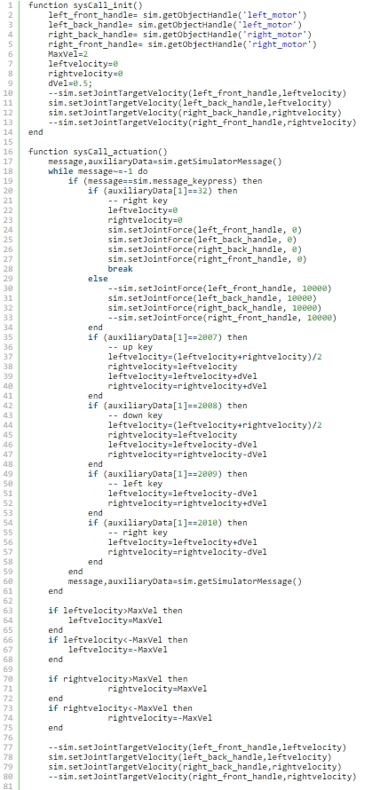

1.將組合好的組合圖匯入，組合起來的飛機
2.加入4根joint，將長度設為0.09m，直徑為0.02m
3.把旋轉軸與四個輪子結合，輪子重新命名left_motor,right_motor,back_left,back_right
5.將機體本身跟輪子設為動態物件並實體化
6.把馬達轉速設為100deg/s
7.代入程式碼

Copyright © All rights reserved | This template is made with by Colorlib